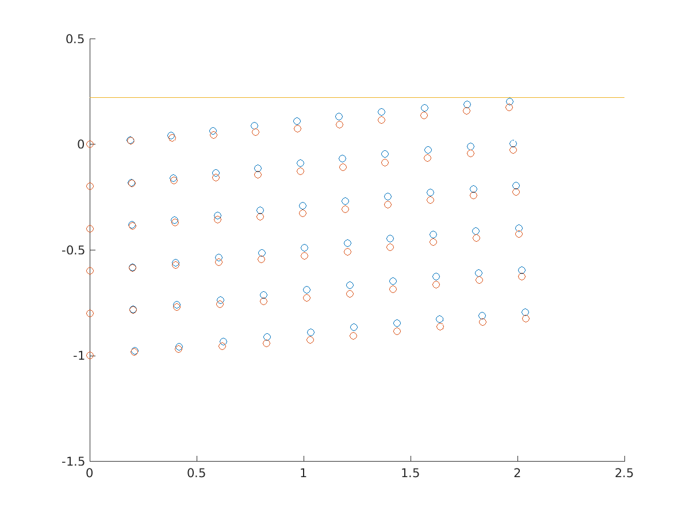

News
- 7 Feb 2016: Use continuation method to solve periodic solution for nonlinear systems.
- 5 Feb 2016: Done with the frictional contact software project (in C++ and Matlab) using Semismooth Newton method.
- 22 Jan 2016: deadline of the ICTAM
- 21 Jan 2016: MIAE poster day. Trottier 2 pm to 5 pm.
- 27 Dec 2015: the harmonic balance method works for contact problem in Lipschitz continuous mapping. The Matlab project is also completed.
- 26 Dec 2015: explain how does contact problems fit into mathematical programming framework.
Publications
- Semismooth Newton Solver for Unilateral Contact [pdf]
MIAE, McGill University, Jan 2016 - semismooth newton solver for periodically-forced solutions to a unilateral contact formulation
ICTAM Aug, 2016
Abstract: The vibratory response of a periodically-forced generic mechanical system undergoing a unilateral contact condition is addressed. The unilateral contact constraint is reformulated as a nonsmooth Lipschitz continuous function. This allows the use of the so-called semismooth Newton method capable of solving the equations governing the dynamics and the unilateral contact constraints simultaneously. The assumed periodic solution and the contact force are approximated by truncated Fourier series before being incorporated in the solver after projection of the equations on the Fourier basis. Continuation of the solution harmonics with respect to the forcing frequency is performed. For a medium size system of 20 degrees-of-freedom, it it shown that convergence is achieved by comparing with the "reference" time-marching solution.
- Constructive non-iterative explicit models of turbofan engines with introduced poles
12th International Bhurban Conference on. IEEE, 2015
Abstract: nonlinear implicit constraint equations and differential dynamic functions are the most accurate descriptions of open-loop model of turbofan engines. However, it's time-consuming to iterate the implicit constraint equations during time-domain simulation. In some literatures, those implicit constraint equations between components are replaced by explicit dynamic functions of volumes between components. Dynamics of the ode model is redesigned using pole relocation method, which increases simulation speed while retained the accuracy.
Researches
-
Semismooth newton method for dynamic contact problem under periodic forcing [pdf]
Structural Dynamics and Vibration Lab, Jan 2016
Fouier function approximation solutions (⚪), Time-marching solutions (⚪), The upper boundary (⚊)
 -
Semismooth Newton Method for Static Contact Problem [pdf]
MECH 546, April 2015
-
Semismooth Newton Method for Dynamic Contact Problem
Structure Dynamics and Vibration Lab, Aug 2015
Projects
-
Periodic Solutions of Rotor-Casing Contact Using Harmonic Balance Method [pdf]
MECH 501, Dec 2015
-
Combining Q-Learning with Artificial Neural Networks in Flappy Bird [pdf]
Flappy Bird Game [html]
COMP 599. Dec 2015
Abstract: The Flappy Bird environment is developed in the JavaScript. The open source machine learning library Convnetjs is included to train the neural network. It is validated that the neural network Q-learning is proper for the learning problem. It is also observed that some strategies emerged after training the simple neural network. -
Waiting Room Problem as an Markov Decision Process [pdf]
ECSE 526, April 2015
- Chess AI agent using search tree (in Java)
ECSE 526, April 2015
Works
- Simulation engineer, McGill Robotics
Setup Gazebo environment for unmanned aerial vehicle simulation.
- Useful link to companies and engineering job positions in Canada
Interests
- Unmanned Aerial Vehicle project
Frame, APM, firmwares are all bought from the robot shop. We assembled them together:)